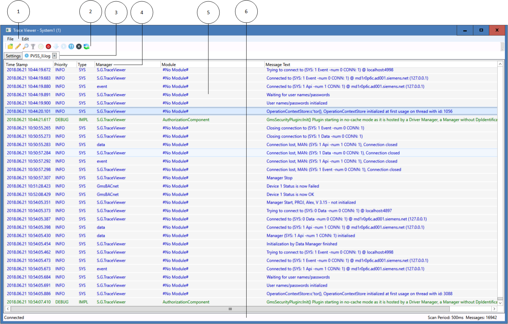
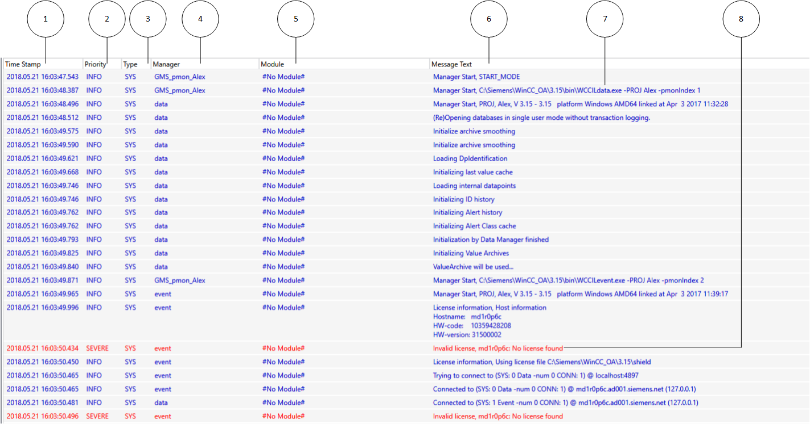
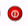
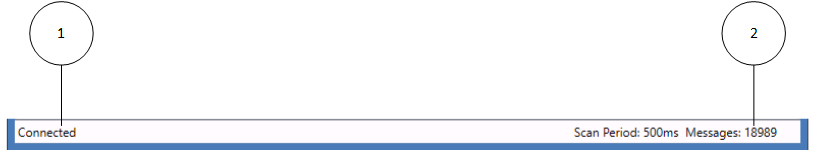
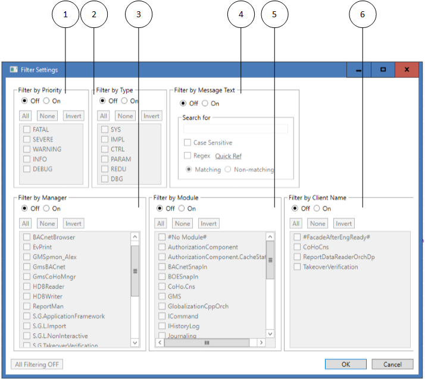

Trace Viewer
To help resolve technical issues with your system or facility, the management station comes with a troubleshooting tool called Trace Viewer. You can use this tool to track various problems, such as authorization or licensing errors, BACnet timeouts, alarm manager issues, general communication errors, and other system problems.
By default, Trace Viewer records activity in a log file stored in the [Installation Drive]:\[Installation Folder]\[Project Name]\log folder. You can also create your own log file and specify that system activity be logged to it instead.
For procedures or workflows, see the step-by-step section.
Trace Viewer Workspace

Trace Viewer Workspace | |
Item | Description |
1 | Menu bar |
2 | Tool bar |
3 | Change the information displayed (show Log Traces / Settings) |
4 | Column description on information window (English only). Localization is not possible. |
5 | Information window for logged data |
6 | Status bar |
Settings Tab
The Settings tab allows you to select the type of activity you want to track, such as error messages, warnings, informational messages, or debug traces. In the Modules section of this tab, you select the system components that you want to trace. If you receive error messages in your system, and you are not sure which module to select for tracing, contact Technical Support for additional help.
NOTE: Only select the components you are troubleshooting to keep the size and amount of data as small as possible.
PVSS_II.log Tab
The PVSS_II.log tab displays system activity based upon your selections in the Settings tab. This information is stored in the log file, which you can send to Technical Support so that they can help you troubleshoot the problems.
Note: Do not use this function for project data logging (for example, measuring air supply temperature). Enabling Trace Viewer always records all trace channels, possibly resulting in reduced system performance.

Trace Viewer Information Window | |
Number | Description |
1 | Time stamp for logged data |
2 | Message priority class |
3 | Type (WinCC AO definition) |
4 | Manager (applications WinCC AO and GMS) |
5 | Modules (only for new GMS components) |
6 | Message text |
7 | Correct actions are displayed as blue message texts. |
8 | Actions not carried out correctly are displayed in red. Actions for fatal traces are displayed in violet. Both are displayed together with the corresponding supplementary information. |

Column width is customizable and saved when exiting the application. Columns cannot be hidden and their order cannot be changed.
Toolbar
Symbol | Description |
Open log file in the Trace Log Viewer. | |
Mark a certain position in the Trace Log Viewer .log file. Markers serve as recognition points in the log file. | |
Find a string in the Message Text in the Trace Log Viewer. Press CTRL+F as a keyboard shortcut. | |
Filter field types in the Trace Log Viewer. | |
Resume logging in the Trace Log Viewer. Data logging in the background is resume. | |
 | Stop logging in the Trace Log Viewer. Data logging in the background is stopped. |
Resume scrolling in the Trace Log Viewer. This icon takes you to the bottom, or the most recent trace in the .log file. | |
Run logging in the Trace Log Viewer. The data in the Trace list are updated continually. | |
Pause logging in the Trace Log Viewer. Data continue to be logged in the background. | |
Deletes the displayed data in the Trace Log Viewer (but not the data in the PVSSII.LOG file). | |
Updates the data from the underlying PVSSII.LOG file and displays the data in the Trace list. |
Status Bar

Status Bar | |
Number | Description |
1 | Shows the status for .NET Wrapper. |
2 | Shows the number of logged messages. |
Filter Settings Window
The Filter Settings window allows you to define the information you want to ultimately display in the Information window. Click the Filter icon in the toolbar to access the separate Filter window.
NOTE: Filtering retrieves data from the .log file and displays the returned information in the Trace Viewer List.

Filter Settings Window | |
Number | Description |
1 | Filter by Priority class |
2 | Filter by Type (WinCC AO definition) |
3 | Filter by Manager (applications WinCC AO and GMS) |
4 | Filter by Message Text |
5 | Filter by Modules (only for new GMS components) |
6 | Filter by Client Name |
Activating priorities Warning, Info and Debug determines the priority levels for data logging.
Show native WinCC AO traces: Selecting the check box logs all WinCC AO log information and displays it in the Information window. This can only be accomplished for all of WinCC AO. In addition, only the entire application can be logged; Subdivision into modules is not possible.
Display original timestamp: Due to system-related loads (for example, network), the event may have occurred a few seconds earlier than indicated by the time in the Trace Log Viewer list. Select this function and the original time stamp is displayed in a separate column.
Special Features and Constraints
Please consider the following special features and constraints when using Trace Viewer:
- Error and Fatal priorities are always enabled. Traces with these priorities are always generated, regardless of the filter settings for types, channels and modules.
- A Fatal trace causes the application to close.
- The filter settings are stored in an XML file upon closing the Trace Viewer. When the Trace Viewer is started next time, the file is read, and the GMSTraceFilter is set accordingly.
- The trace filtering only applies to .NET managers using the .NET wrapper. Unmanaged (C++) managers using the ErrorHandler class are not affected by the filter mechanism and trace directly to the log file without filtering. Such traces will be handled by the Trace Viewer as generic WinCC AO System traces.
- Tracing via .NET wrapper only works if the PVSS project contains the _GMSTraceFilter data point type and one instance of this type called SingletonGMSTraceFilter. If the instance is missing, Trace Viewer issues an error message upon startup, and no traces will be displayed. The filter settings can be changed, but they cannot be written to the filter data point.
- The Trace Viewer works locally. It shows only the traces generated by Managers running on the same WinCC AO System (and therefore writing to the local PVSSII.log file).The number of instances of Trace Viewer on a single computer is limited to one. However, there can be multiple instances in the same project on several PCs. All these instances share the same GMSTraceFilter data point, and there can be some interaction effects when changing the filter settings or when terminating an instance of Trace Viewer.